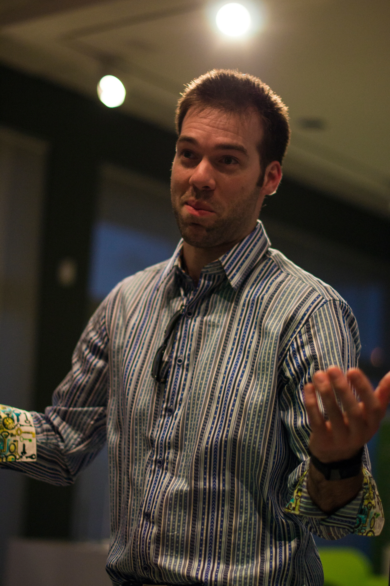
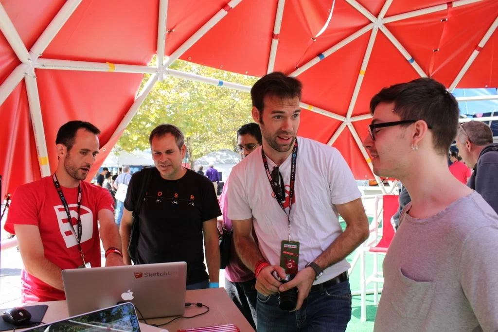
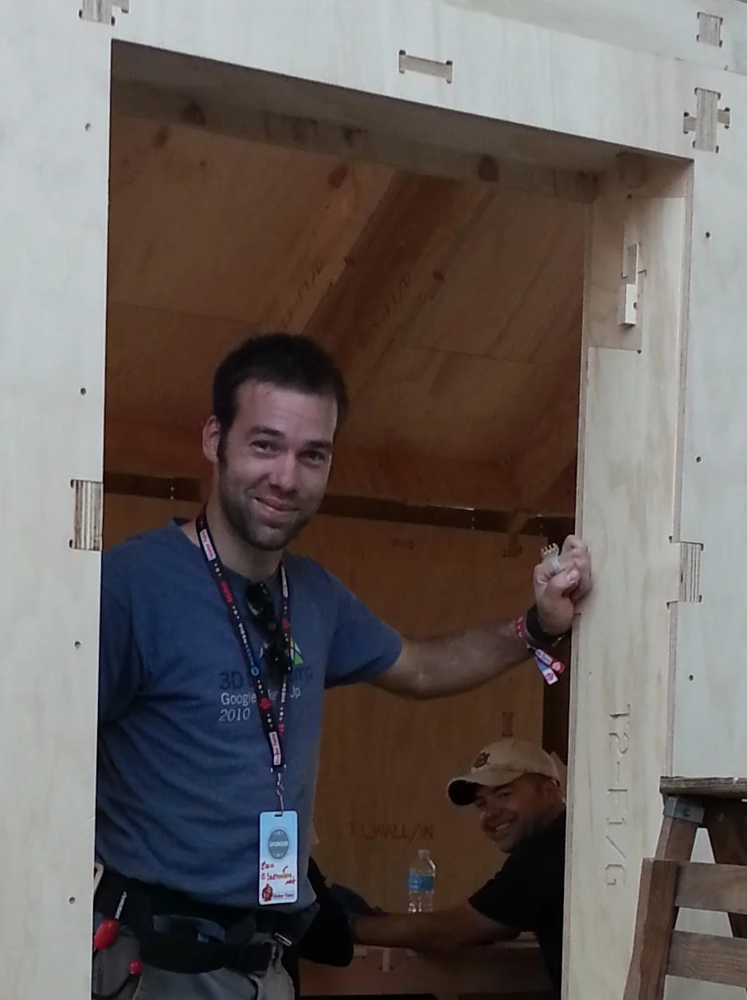

Eric started his career designing architectural millwork, furniture and cabinetry. After many years working for wood shops and cabinetry showrooms he founded SketchThis.net with the goal of making it easier for designers to use technology in their businesses.
He has worked with Google and Trimble on the development of Sketchup, and traveled the country teaching Sketchup and digital fabrication to countless students.
Eric also has an intense passion for digital fabrication and “making”. He uses and teaches 3D printing and CNC fabrication. He has helped design and build digitally fabricated homes, geodesic domes, and many other cutting edge projects.
His company, SketchThis.NET, also developed and launched a kitchen design plugin for Sketchup. This plugin is a cloud service that plugs directly into Sketchup and provides a rich catalog of cabinetry and interior components. Designing kitchens and interiors used to take hours; this plugin can do complex jobs in minutes.
He is also a regular columnist for Kitchen & Bath Design News, MAKE Magazine, he teaches Sketchup nationally, and speaks on emerging technologies for the design field.
In his latest venture he founded Fabber, a cloud based CAM software that instantly takes 3D models and turns then into ready to run code for a vast number of digital fabrication robots (CNC machines).
Eric now works as a product manager for Avid CNC. In his time there he’s worked in improving both hardware and software including launching an innovative diode laser add-on. This laser is an industry first with an advanced pnuematic deployment system and integrated software.